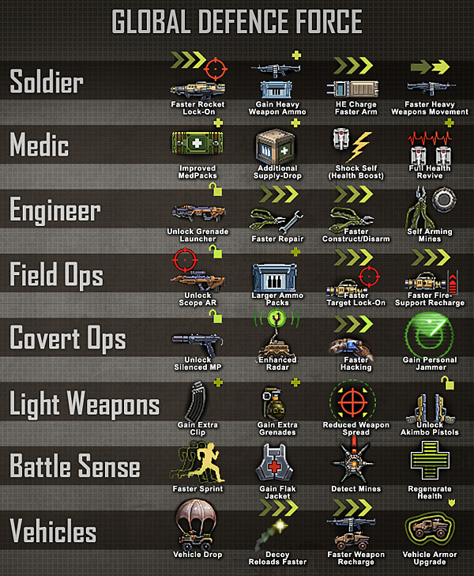

Campaign length rewards
Experience Points
Experience points are awarded for successful actions (such as using a tool, a vehicle, hitting a target, staying alive during combat, supplying a team-mate with health or ammunition). It's important to note that Campaign length rewards only last for the duration of a single three map campaign. When the three map Campaign is over, your Campaign rewards are reset and you start the next campaign with default class settings.
Skill Categories
Points are stored in one of eight categories, dependent on which action leads to the award.The categories are:

Rewards are achieved as a specific category of XP reaches predefined levels. The amount of XP required at each level increases exponentially.
NOTE: For un-lockable rewards you may have to select your upgrade and will not get it until your next respawn.
The Battlesense category rewards players for staying alive and engaging in combat; if the player is still alive at the end of the time period, the player may be awarded experience points in the Battlesense category. If the player dies, this counter is reset, and he must again wait for the set time period after his spawn to receive points. However, the player's combat status is *not* cleared when he dies (only once a bonus is given).
Category Stars
A variety of in-game actions may lead to the accrual of XP, and this XP is stored in different categories. As such, a more simple method for representing campaign-length proficiency is needed for the average player, and perhaps more importantly, to identify when they will achieve their next reward.
Skill Stars achieve this goal by identifying when a player has reached a preset value of XP in a skill category. The amount of XP required to ‘level up’ in each category increases exponentially with each level:
For Classes and Vehicles:
- 1 star = 15 XP
- 2 stars = 30 XP
- 3 stars = 60 XP
- 4 stars = 120 XP
For Battlesense and Light Weapons:
- 1 star = 10 XP
- 2 stars = 20 XP
- 3 stars = 40 XP
- 4 stars = 80 XP
Furthermore, since the rewards for the class-specific categories (Engineer or Medic for example) are only of relevance when playing that specific class, only four categories are ever really relevant to play; a player playing Engineer, need only be concerned with his current levels in Engineer, Light Weapons, Vehicles and Battlesense.